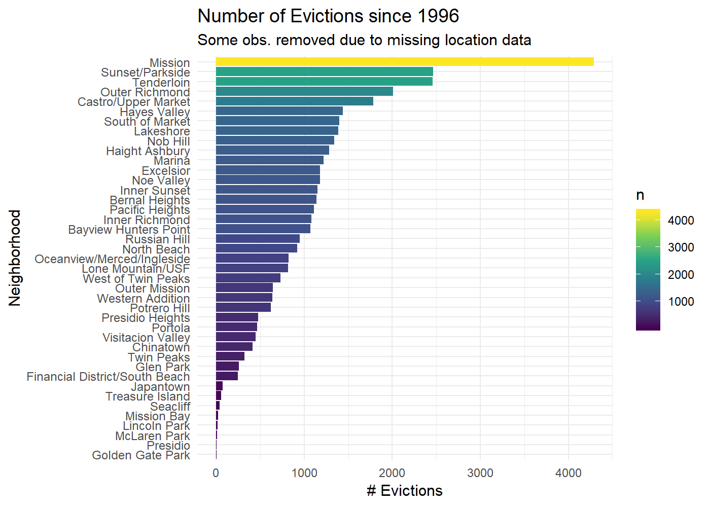
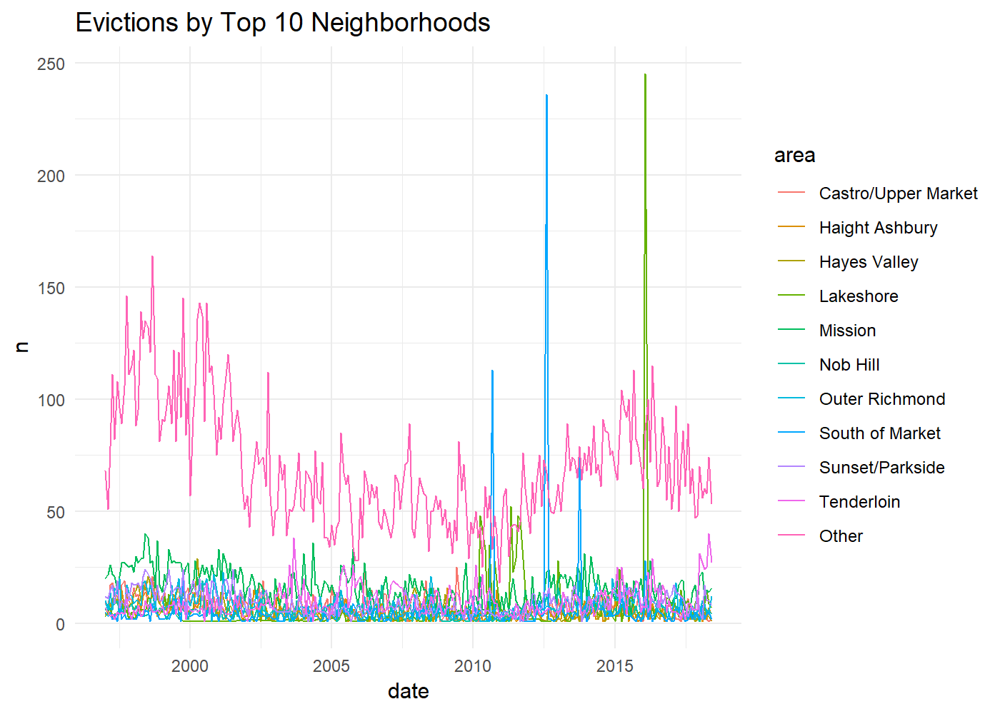
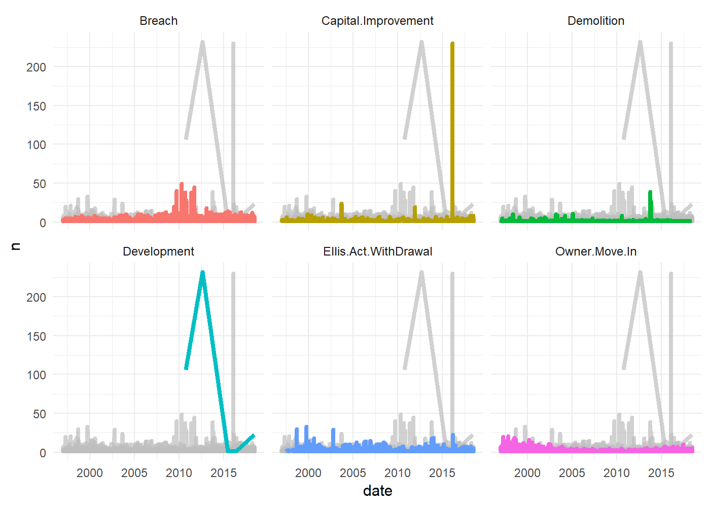
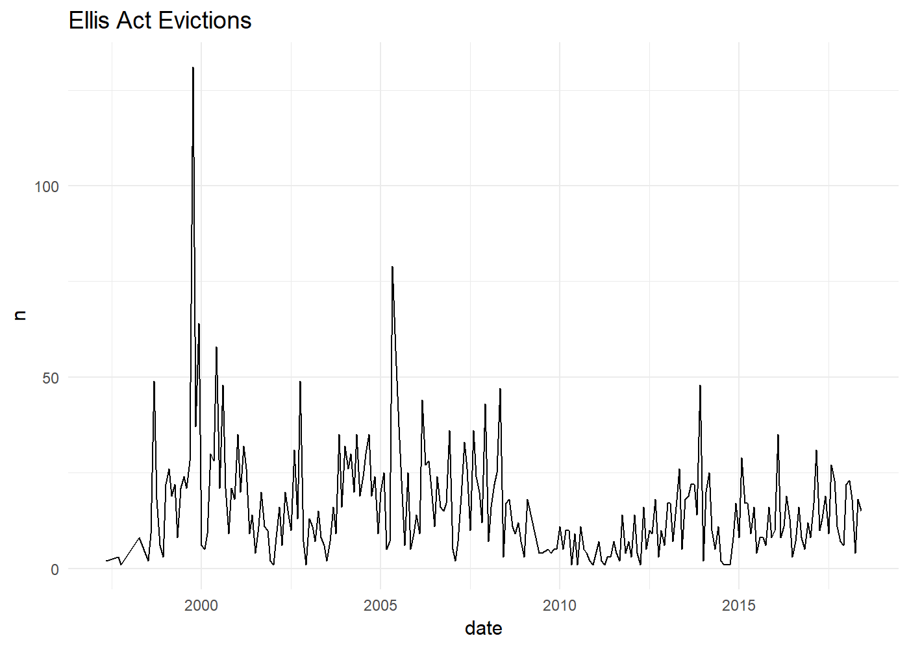
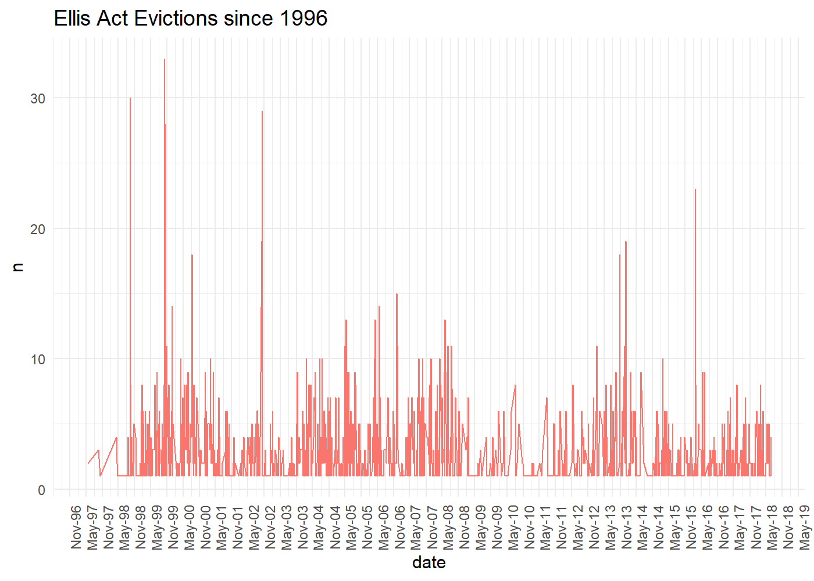
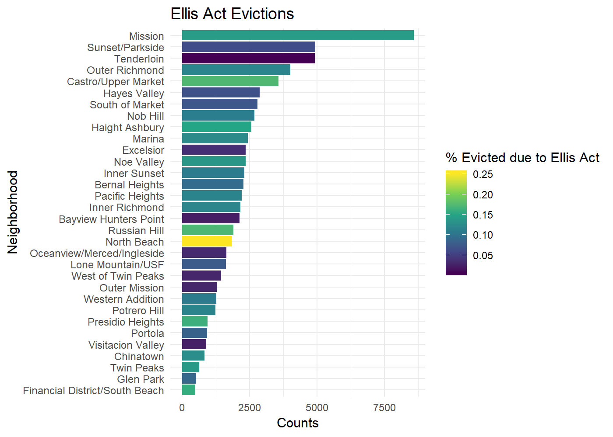
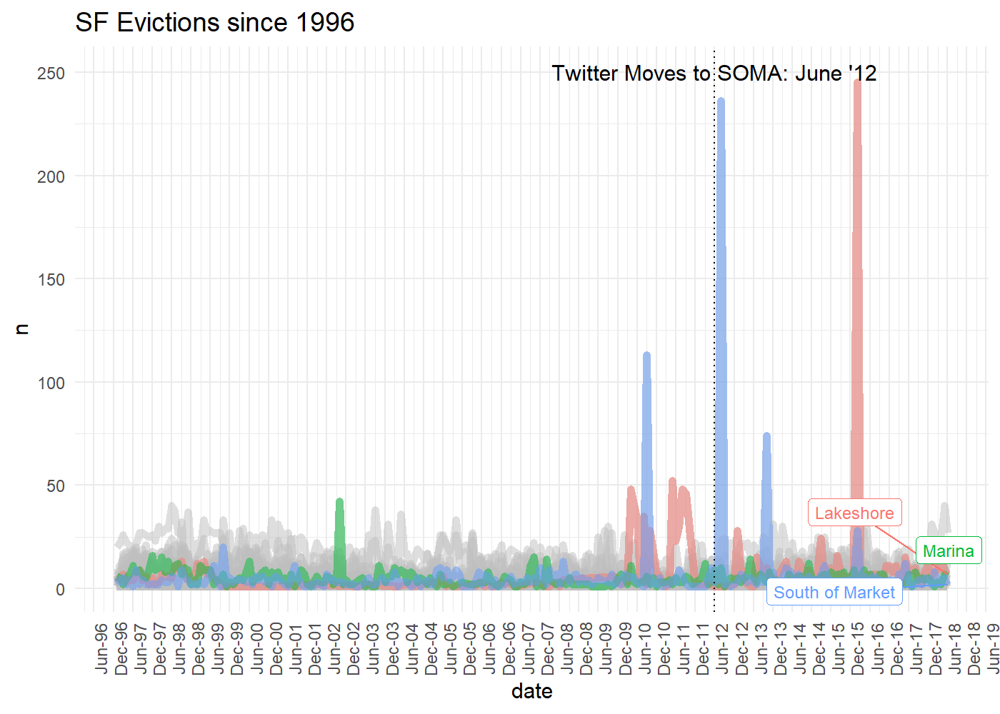
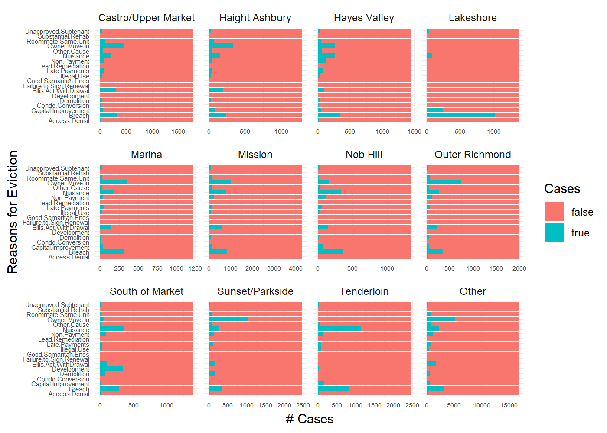
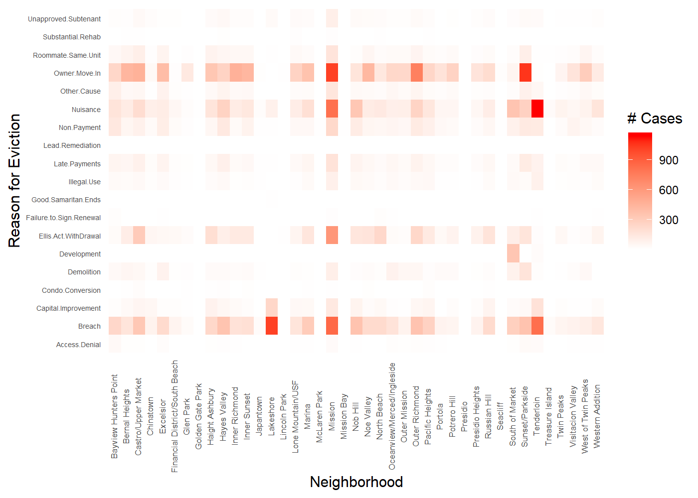
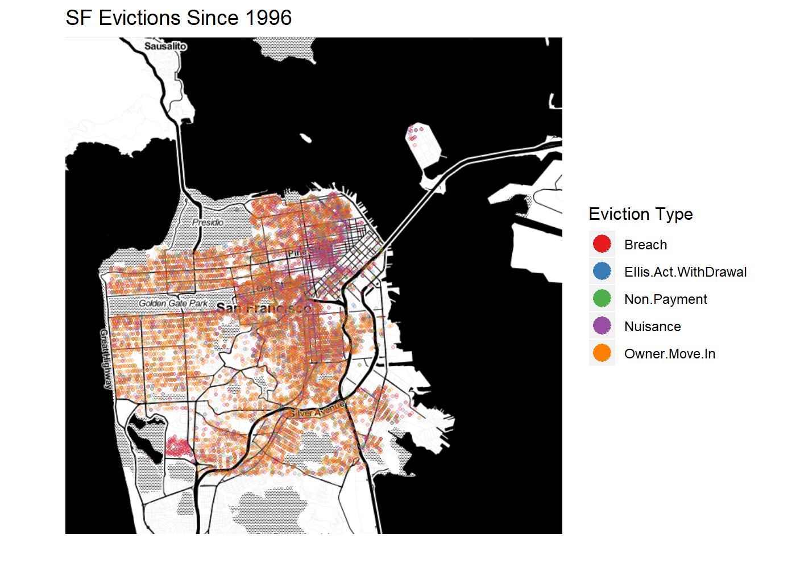

Data Analysis: Evictions in San Francisco
- Understanding Evictions in SF
- Where do Most Evictions Happen?
- Evictions over Time
- Causes of Eviction over Time
- Ellis Act Evictions
- Areas with most Ellis Act Evictions
- Using GGhighlight to Look at Specific areas over time
- Deeper Dive into Evictions by Neighborhood
- Heatmap of the Same Thing
- Mapping Evictions
Understanding Evictions in SF
Evictions are a hot topic in SF, especially due to the fairly recent influx of young engineers from all over the country making six-figure salaries and choosing to live in the city (even with a one-hour commute to the South Bay). All this gentrification means inevitably that older, poorer SF residents are being forced to move in order to meet the demand for apartments in “hip” neighborhoods. Having thousands of young, wealthy new tech arrivals is great if you’re a restaurant, bar, or landlord in SF. It’s less clear how the elderly and poor of benefit from all this. In fact, tech employees have received a great deal of criticism in local media outlets, and I distinctly remember hearing about cases of vandals defacing the Google/FB shuttlebuses that would come and pick up employees in the morning around SF and drive them down to Silicon Valley. I thought it might be interesting to see whether data could help to shed new light on this controversial issue.
The Ellis Act
One way landlords can force tenants to move is through something called the Ellis Act. Essentially, the Ellis Act allows landlords to remove their properties from the rental market and requires them to pay, at minimum, about $5000 to the affected tenants. Typically the tenants will have a couple months’ notice before they must pack their things and vacate the apartment building.
I’m particularly interested in looking at how the Ellis Act has been used in different parts of the city to essentially get rid of rent-controlled apartment units and make way for fancy lofts and studios for the incoming batch of tech-elite.
Another reason why I’m interested in the Ellis Act is because it was used to evict me and my two friends from our apartment shortly after I was laid off from my job. I saw first hand how the Ellis Act was used to evict our neighbor, a 90-something Holocaust survivor, from his Tenderloin apartment of 20+ years. I’m not sure he was given much more than $5,000, and I have no idea if the property management company provided the necessary funds to help him move into a relative’s house, or to put him into an appropriate care facility. The whole thing was pretty sad, really.
With that said, let’s dive in to the dataset provided by SF’s Open Data website. We have 39,383 cases of eviction and they’ve measured them on 30 variables. Here are the variables they’ve recorded.
## [6] "File.Date"
## [7] "Non.Payment"
## [8] "Breach"
## [9] "Nuisance"
## [10] "Illegal.Use"
## [11] "Failure.to.Sign.Renewal"
## [12] "Access.Denial"
## [13] "Unapproved.Subtenant"
## [14] "Owner.Move.In"
## [15] "Demolition"
## [16] "Capital.Improvement"
## [17] "Substantial.Rehab"
## [18] "Ellis.Act.WithDrawal"
Even though I’ve erased some columns to shorten the output, you can see that they provide some useful information as to the type of eviction and also the dates and geolocations of the evictions. We’ll mostly be using that to make our visualizations.
Where do Most Evictions Happen?
Let’s start by seeing which areas are most affected by evictions. 
Clearly the Mission is in the lead, with over 4000 evictions. It’s also probably not surprising that this neighborhood has been rapidly gentrifying over the past decade.
Evictions over Time
We will look at the time series of evictions to see if there are any temporal patterns. To make the plot more informative, we will aggregate evictions into one-month intervals by using floor_date().

Most of the neighborhoods are indistinguishable from each other in terms of eviction patterns. That said, there are about three areas that have interesting patterns.
Later on we will be looking more closely at these big spikes in SOMA and Lakeshore. But for now, just take note of them. Also, notice how the rise in evictions seems to mirror the strength of the economy.
Causes of Eviction over Time
GGhighlight is great for contrasting facets for different factor levels.

We see originally around 1996, owner move in was common, then Ellis Acts started around 1998, with a few peaks every few years. Then… boom! Huge development around 2011 (again, this is around when Twitter moved downtown) and another huge spike in development improvements around 2015. It’s curious that ‘Breaches’ occurred at the same time development spiked. I wouldn’t be surprised if landlords were using that as a pretext for evicting in order to cash in on the tech boom.
Ellis Act Evictions
Here’s the overall counts of Ellis Act evictions.

Is the the bump around 2000 related to the dot com bubble? I’d venture that it probably was. Young tech workers were looking for renovated apartments in SF and landlords likely relied on the Ellis Act to kick out the older, poorer tenants. This is just speculation on my part, though. But notice that during the recession’s peak–around 2010–there are almost 0 Ellis Act Evictions in the city. I’d be willing to be that Ellis Act Evictions and the strength of the SF economy are highly linked.
Let’s look more closely at when these Ellis Act evictions took place. 
Again, we see the dot-com boom era with a lot of Ellis Act evictions. It also appears there may be some within-year seasonality. This would be worth analyzing further. It might be the case that certain times of the year experience more Ellis Act evictions.
Just as the recession hits in 2008, there’s a super sharp drop in Ellis Act evictions. Coincidence…?
Areas with most Ellis Act Evictions
We were evicted from our apartment in the Tenderloin. Is that common? 
Ellis Act evictions are actually not that common overall, but in North Beach it seems they are used in nearly 25% of all evictions. They seem to account for about 15% of evictions in the Mission and Castro/Upper Market, as well. I’m not so sure about North Beach, but the Mission and Upper Market are “hot” neighborhoods.
In fact, if you look at a lot of the neighborhoods you’ll see that there seems to be some correlation between the “coolness” of the neighborhood and the percentage of evictions that are Ellis Act-based. For example, Hunter’s Point, the Tenderloin, and Oceanview/Merced are not typically considered “cool” areas to live, and we see very few Ellis Act evictions.
Using GGhighlight to Look at Specific areas over time
We’ll use a new and useful library I recently learned about called GGhighlight. It makes it easier to subset parts of your data.

I’ve highlighted here when Twitter moved its office to SOMA. If I had to guess, there is definitely a connection between the rise in evictions and the SOMA ‘tech boom.’ I’m not really sure what’s driving the Lakeshore eviction bonanza, though.
Deeper Dive into Evictions by Neighborhood
Here we’ll look at the proportion of evictions by type of eviction by neighborhood. 
This plot is very instructive. We can see a basic pattern that most evictions are due to a few main reasons: owner move in, Nuisance, and Breach (of contract?). In the Tenderloin, Nuisance the most common reason for eviction.
Let’s focus on those big bars. In Sunset we see a lot of owner move in evictions, while in the Tenderloin we see a lot of Nuisance evictions and breach of contract.
Since I’m interested in the Ellis Act, we can see that it seems more common in three areas: Castro, SOMA, and the Mission. In Lakeshore (the area near the fancy golf club), we can see that ‘Breach’ evictions are by far the most common, followed by ‘Capital Improvements.’ Notice that these are usually houses, not apartments/condos as in most other parts of the city. This area could also be housing students near SFSU.
Heatmap of the Same Thing
Here’s another way of visualizing the same kind of information. This way might be more intelligible for some people. 
The heatmap may be better here because we can fit in all 40+ neighborhoods. Again, we see that among the reasons for eviction, Owner Move in, Nuisance, Ellis Act Withdrawals, and Breach of contract are the most common.
And among the areas of the city, the Tenderloin, the Mission, Lakshore, and probably the Outer Richmond have been the most common sites of evictions.
Mapping Evictions
Finally, let’s visualize where all these evictions are happening using the geocoded locations provided in the dataset.

So there we have it. We see near SOMA that a combination of Nuisance/Ellis Act/Breach is used to evict. Lakeshore is almost all breaches. Treasure Island is also all Breach/Nuisance. For the rest of the city, however, you’re most likely to be evicted due to Owner Move In.
Final Thoughts
Based on this analysis, it does seem fair to say that the tech boom and its concomitant influx of young, newly minted engineeers, is a very likely cause for the eviction of older, poorer San Francisco residents. Especially those in rent-controlled apartments in the Mission, Upper Market, and the Tenderloin (to a lesser extent). The correlation between the number of evictions and the general state of the US economy is particularly telling: as the economy is humming, Ellis Act evictions increase; and when the economy tanks–as it did in 2008–all of a sudden no one wants to use the Ellis Act to evict anyone anymore. And the huge jump in “development” evictions at the time Twitter moved into SOMA is another indicator for this explanation.
One thing I can’t figure out, however, is what is causing all these Lakeshore evictions due to “Breaches” and “Capital Investments.”